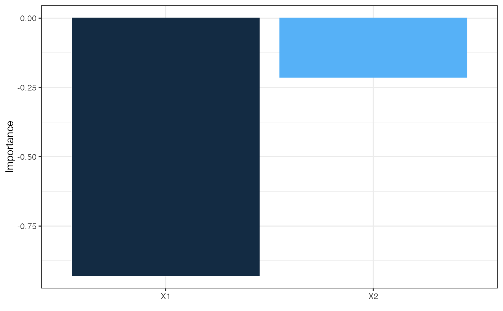
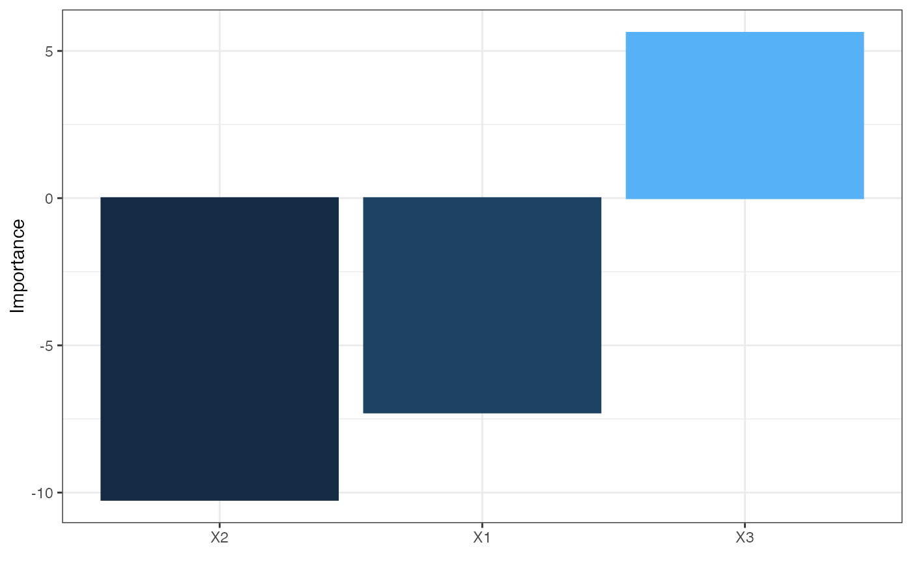

Relative importance of input variables in neural networks as the sum of the product of raw input-hidden, hidden-output connection weights, proposed by Olden et al. 2004.
olden(mod_in, ...)
# S3 method for default
olden(
mod_in,
x_names,
y_names,
out_var = NULL,
bar_plot = TRUE,
x_lab = NULL,
y_lab = NULL,
skip_wts = NULL,
...
)
# S3 method for numeric
olden(mod_in, struct, ...)
# S3 method for nnet
olden(mod_in, ...)
# S3 method for mlp
olden(mod_in, ...)
# S3 method for nn
olden(mod_in, ...)
# S3 method for train
olden(mod_in, ...)input model object or a list of model weights as returned from neuralweights if using the default method
arguments passed to or from other methods
chr string of input variable names, obtained from the model object
chr string of response variable names, obtained from the model object
chr string indicating the response variable in the neural network object to be evaluated. Only one input is allowed for models with more than one response. Names must be of the form 'Y1', 'Y2', etc. if using numeric values as weight inputs for mod_in.
logical indicating if a ggplot object is returned (default T), otherwise numeric values are returned
chr string of alternative names to be used for explanatory variables in the figure, default is taken from mod_in
chr string of alternative names to be used for response variable in the figure, default is taken from out_var
vector from neuralskips for nnet models with skip-layer connections
numeric vector equal in length to the number of layers in the network. Each number indicates the number of nodes in each layer starting with the input and ending with the output. An arbitrary number of hidden layers can be included.
A ggplot object for plotting if bar_plot = FALSE, otherwise a data.frame of relative importance values for each input variable.
This method is similar to Garson's algorithm (Garson 1991, modified by Goh 1995) in that the connection weights between layers of a neural network form the basis for determining variable importance. However, Olden et al. 2004 describe a connection weights algorithm that consistently out-performed Garson's algorithm in representing the true variable importance in simulated datasets. This `Olden' method calculates variable importance as the product of the raw input-hidden and hidden-output connection weights between each input and output neuron and sums the product across all hidden neurons. An advantage of this approach is the relative contributions of each connection weight are maintained in terms of both magnitude and sign as compared to Garson's algorithm which only considers the absolute magnitude. For example, connection weights that change sign (e.g., positive to negative) between the input-hidden to hidden-output layers would have a cancelling effect whereas Garson's algorithm may provide misleading results based on the absolute magnitude. An additional advantage is that Olden's algorithm is capable of evaluating neural networks with multiple hidden layers wheras Garson's was developed for networks with a single hidden layer.
The importance values assigned to each variable are in units that are based directly on the summed product of the connection weights. The actual values should only be interpreted based on relative sign and magnitude between explanatory variables. Comparisons between different models should not be made.
The Olden function also works with networks that have skip layers by adding the input-output connection weights to the final summed product of all input-hidden and hidden-output connections. This was not described in the original method so interpret with caution.
By default, the results are shown only for the first response variable for networks with multiple output nodes. The plotted response variable can be changed with out_var.
Beck, M.W. 2018. NeuralNetTools: Visualization and Analysis Tools for Neural Networks. Journal of Statistical Software. 85(11):1-20.
Garson, G.D. 1991. Interpreting neural network connection weights. Artificial Intelligence Expert. 6(4):46-51.
Goh, A.T.C. 1995. Back-propagation neural networks for modeling complex systems. Artificial Intelligence in Engineering. 9(3):143-151.
Olden, J.D., Jackson, D.A. 2002. Illuminating the 'black-box': a randomization approach for understanding variable contributions in artificial neural networks. Ecological Modelling. 154:135-150.
Olden, J.D., Joy, M.K., Death, R.G. 2004. An accurate comparison of methods for quantifying variable importance in artificial neural networks using simulated data. Ecological Modelling. 178:389-397.
## using numeric input
wts_in <- c(13.12, 1.49, 0.16, -0.11, -0.19, -0.16, 0.56, -0.52, 0.81)
struct <- c(2, 2, 1) #two inputs, two hidden, one output
olden(wts_in, struct)

## using nnet
library(nnet)
data(neuraldat)
set.seed(123)
mod <- nnet(Y1 ~ X1 + X2 + X3, data = neuraldat, size = 5)
#> # weights: 26
#> initial value 259.012592
#> iter 10 value 0.986480
#> iter 20 value 0.225311
#> iter 30 value 0.139585
#> iter 40 value 0.098961
#> iter 50 value 0.038200
#> iter 60 value 0.022839
#> iter 70 value 0.013774
#> iter 80 value 0.008530
#> iter 90 value 0.005172
#> iter 100 value 0.003044
#> final value 0.003044
#> stopped after 100 iterations
olden(mod)

if (FALSE) {
## View the difference for a model w/ skip layers
set.seed(123)
mod <- nnet(Y1 ~ X1 + X2 + X3, data = neuraldat, size = 5, skip = TRUE)
olden(mod)
## using RSNNS, no bias layers
library(RSNNS)
x <- neuraldat[, c('X1', 'X2', 'X3')]
y <- neuraldat[, 'Y1']
mod <- mlp(x, y, size = 5)
olden(mod)
## using neuralnet
library(neuralnet)
mod <- neuralnet(Y1 ~ X1 + X2 + X3, data = neuraldat, hidden = 5)
olden(mod)
## using caret
library(caret)
mod <- train(Y1 ~ X1 + X2 + X3, method = 'nnet', data = neuraldat, linout = TRUE)
olden(mod)
## multiple hidden layers
x <- neuraldat[, c('X1', 'X2', 'X3')]
y <- neuraldat[, 'Y1']
mod <- mlp(x, y, size = c(5, 7, 6), linOut = TRUE)
olden(mod)
}